Peer-to-Peer Electronic Cash · October 31, 2008
Bitcoin: A Peer-to-Peer Electronic Cash System
比特币：一种点对点的电子现金系统
Genesis Block · 2009.01.03 000000000019d6689c085ae165831e934ff763ae46a2a6c172b3f1b60a8ce26f
▾Abstract
摘要
A purely peer-to-peer version of electronic cash would allow online payments to be sent directly from one party to another without going through a financial institution. Digital signatures provide part of the solution, but the main benefits are lost if a trusted third party is still required to prevent double-spending. We propose a solution to the double-spending problem using a peer-to-peer network. The network timestamps transactions by hashing them into an ongoing chain of hash-based proof-of-work, forming a record that cannot be changed without redoing the proof-of-work. The longest chain not only serves as proof of the sequence of events witnessed, but proof that it came from the largest pool of CPU power. As long as a majority of CPU power is controlled by nodes that are not cooperating to attack the network, they'll generate the longest chain and outpace attackers. The network itself requires minimal structure. Messages are broadcast on a best effort basis, and nodes can leave and rejoin the network at will, accepting the longest proof-of-work chain as proof of what happened while they were gone.
一种完全的点对点版本的电子现金，将允许在线支付直接由一方发送给另一方，而无需经过任何金融机构。数字签名提供了部分解决方案，但如果仍需要可信第三方来防止双重支付，那么电子现金的主要优势就荡然无存。我们提出一种利用点对点网络解决双重支付问题的方案。该网络通过把交易哈希进一条持续增长的、基于哈希的工作量证明链，为交易打上时间戳，形成一条不重做工作量证明就无法更改的记录。最长的链不仅是所见证事件顺序的证明，也证明了它出自最大的 CPU 算力池。只要多数 CPU 算力由不合谋攻击网络的节点控制，这些节点就会生成最长的链，并把攻击者甩在后面。网络本身只需要极简的结构。消息以尽力而为的方式广播，节点可以随时离开和重新加入网络，只需把最长的工作量证明链视为它们离开期间所发生事件的证明。
Introduction
引言
Commerce on the Internet has come to rely almost exclusively on financial institutions serving as trusted third parties to process electronic payments. While the system works well enough for most transactions, it still suffers from the inherent weaknesses of the trust based model. Completely non-reversible transactions are not really possible, since financial institutions cannot avoid mediating disputes. The cost of mediation increases transaction costs, limiting the minimum practical transaction size and cutting off the possibility for small casual transactions, and there is a broader cost in the loss of ability to make non-reversible payments for non-reversible services. With the possibility of reversal, the need for trust spreads. Merchants must be wary of their customers, hassling them for more information than they would otherwise need. A certain percentage of fraud is accepted as unavoidable. These costs and payment uncertainties can be avoided in person by using physical currency, but no mechanism exists to make payments over a communications channel without a trusted party.
互联网上的商业活动，几乎完全依赖金融机构充当可信第三方来处理电子支付。虽然对绝大多数交易而言这一体系运转得还算良好，但它仍然承受着信任模型与生俱来的缺陷。完全不可逆的交易实际上是做不到的，因为金融机构无法避免介入纠纷调解。调解成本推高了交易成本，限制了实际可行的最小交易规模，掐断了小额临时交易的可能性；而由于无法为不可逆的服务做出不可逆的支付，社会还要付出更大的代价。伴随着交易可以被撤销的可能，对信任的需求四处蔓延。商家必须提防自己的顾客，向他们索取本不必要的更多信息。一定比例的欺诈被当作不可避免的成本默然接受。这些成本和支付上的不确定性，在面对面使用实物货币时是可以避免的，但目前还不存在任何机制，能让交易双方在没有可信第三方的情况下通过通信信道完成支付。
What is needed is an electronic payment system based on cryptographic proof instead of trust, allowing any two willing parties to transact directly with each other without the need for a trusted third party. Transactions that are computationally impractical to reverse would protect sellers from fraud, and routine escrow mechanisms could easily be implemented to protect buyers. In this paper, we propose a solution to the double-spending problem using a peer-to-peer distributed timestamp server to generate computational proof of the chronological order of transactions. The system is secure as long as honest nodes collectively control more CPU power than any cooperating group of attacker nodes.
我们真正需要的，是一个基于密码学证明而非信任的电子支付系统，让任意两个有交易意愿的当事人可以直接交易，而无需可信第三方的参与。在计算上不可逆的交易能保护卖家免受欺诈，而保护买家的常规托管机制也很容易实现。在本文中，我们提出一种利用点对点分布式时间戳服务器解决双重支付问题的方案，由它为交易的时间先后顺序生成计算上的证明。只要诚实节点合计控制的 CPU 算力多于任何一组合谋攻击的节点，这个系统就是安全的。
Transactions
交易
We define an electronic coin as a chain of digital signatures. Each owner transfers the coin to the next by digitally signing a hash of the previous transaction and the public key of the next owner and adding these to the end of the coin. A payee can verify the signatures to verify the chain of ownership.
我们把一枚电子货币定义为一条数字签名链。每一位所有者把上一笔交易的哈希和下一位所有者的公钥进行数字签名，并附加到这枚货币的末尾，即可把它转移给下一位所有者。收款人通过验证这些签名，就能验证这条所有权链。
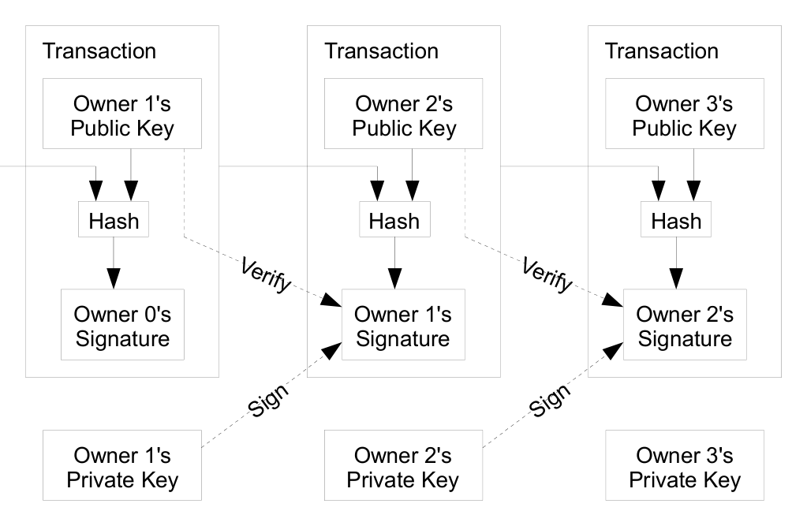
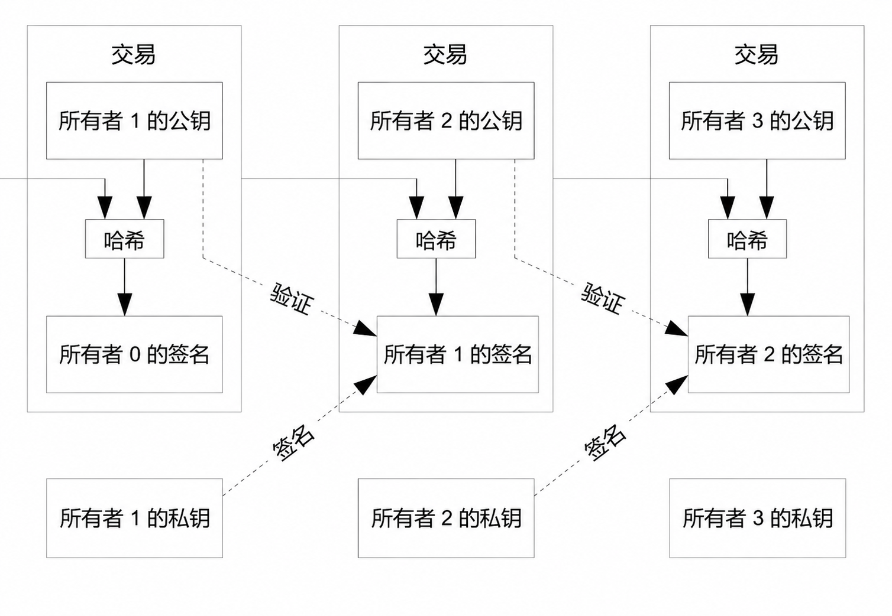
The problem of course is the payee can't verify that one of the owners did not double-spend the coin. A common solution is to introduce a trusted central authority, or mint, that checks every transaction for double spending. After each transaction, the coin must be returned to the mint to issue a new coin, and only coins issued directly from the mint are trusted not to be double-spent. The problem with this solution is that the fate of the entire money system depends on the company running the mint, with every transaction having to go through them, just like a bank.
这个方案的问题当然在于，收款人无法验证货币的历任所有者之中没有人实施过双重支付。常见的解决办法是引入一个可信的中央机构，即“铸币厂”，由它检查每一笔交易是否存在双重支付。每笔交易之后，货币都必须交回铸币厂换发新币，只有由铸币厂直接发行的货币，才被信任未被双重支付过。这种方案的问题在于，整个货币体系的命运都系于运营铸币厂的公司，每一笔交易都必须经它之手，就像银行一样。
We need a way for the payee to know that the previous owners did not sign any earlier transactions. For our purposes, the earliest transaction is the one that counts, so we don't care about later attempts to double-spend. The only way to confirm the absence of a transaction is to be aware of all transactions. In the mint based model, the mint was aware of all transactions and decided which arrived first. To accomplish this without a trusted party, transactions must be publicly announced[1], and we need a system for participants to agree on a single history of the order in which they were received. The payee needs proof that at the time of each transaction, the majority of nodes agreed it was the first received.
我们需要一种办法，让收款人确信此前的所有者没有在更早的交易上签过名。就我们的目的而言，只有最早的那笔交易才算数，因此我们并不关心之后的双重支付企图。要确认某笔交易不存在，唯一的办法是知晓所有交易。在铸币厂模型中，铸币厂知晓所有交易，并裁决哪笔先到。要在没有可信第三方的情况下做到这一点，交易就必须公开宣布[1]，而且我们需要一个系统，让所有参与者就交易被接收的先后顺序达成对单一历史的共识。收款人需要的证明是：在每笔交易发生之时，多数节点公认它是最先收到的那一笔。
Timestamp Server
时间戳服务器
The solution we propose begins with a timestamp server. A timestamp server works by taking a hash of a block of items to be timestamped and widely publishing the hash, such as in a newspaper or Usenet post[2-5]. The timestamp proves that the data must have existed at the time, obviously, in order to get into the hash. Each timestamp includes the previous timestamp in its hash, forming a chain, with each additional timestamp reinforcing the ones before it.
我们提出的方案从时间戳服务器开始。时间戳服务器的工作方式是：对一个区块中待打时间戳的多个条目取哈希，然后把这个哈希广泛发布，比如刊登在报纸上或 Usenet 帖子里[2-5]。显然，时间戳能够证明这些数据在当时必定已经存在，否则不可能进入哈希。每个时间戳都在其哈希中纳入前一个时间戳，形成一条链，后来的每一个时间戳都在强化它之前的所有时间戳。
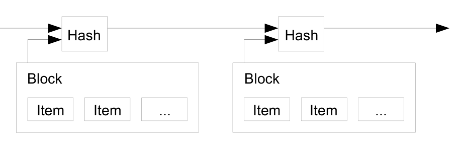
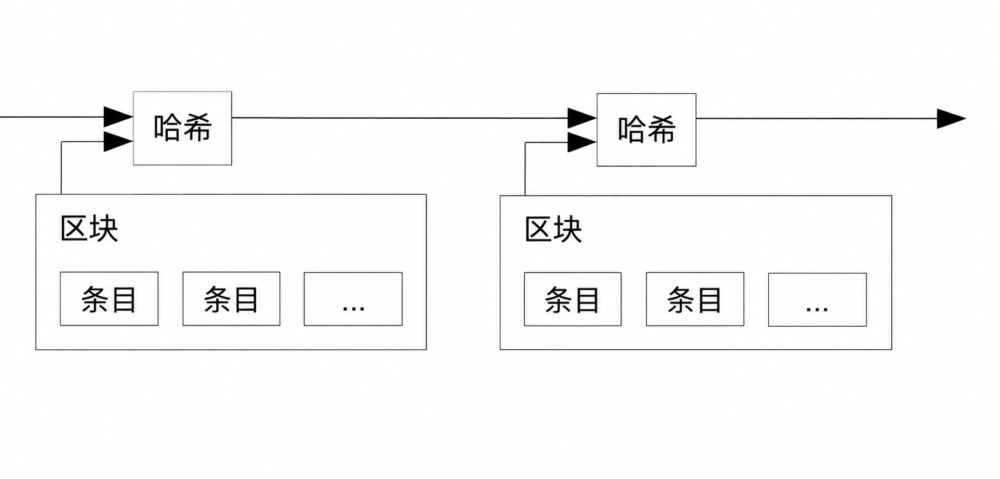
Proof-of-Work
工作量证明
To implement a distributed timestamp server on a peer-to-peer basis, we will need to use a proof-of-work system similar to Adam Back's Hashcash[6], rather than newspaper or Usenet posts. The proof-of-work involves scanning for a value that when hashed, such as with SHA-256, the hash begins with a number of zero bits. The average work required is exponential in the number of zero bits required and can be verified by executing a single hash.
要在点对点的基础上实现分布式时间戳服务器，我们需要使用类似 Adam Back 的 Hashcash[6] 那样的工作量证明系统，而不是报纸或 Usenet 帖子。工作量证明就是去搜寻这样一个值：对它取哈希（例如用 SHA-256）时，哈希值以若干个零比特开头。所需的平均工作量随所要求的零比特数目呈指数增长，而验证只需执行一次哈希。
For our timestamp network, we implement the proof-of-work by incrementing a nonce in the block until a value is found that gives the block's hash the required zero bits. Once the CPU effort has been expended to make it satisfy the proof-of-work, the block cannot be changed without redoing the work. As later blocks are chained after it, the work to change the block would include redoing all the blocks after it.
在我们的时间戳网络中，工作量证明是这样实现的：在区块中不断递增随机数（nonce），直到找到某个值，使区块的哈希获得所需数量的零比特。一旦为满足工作量证明而付出了 CPU 算力，那么除非重做这些工作，否则区块就无法更改。由于后续区块不断链接在它之后，要改动这个区块，就必须重做其后所有区块的工作。
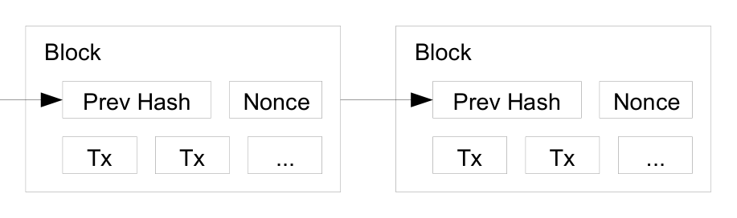
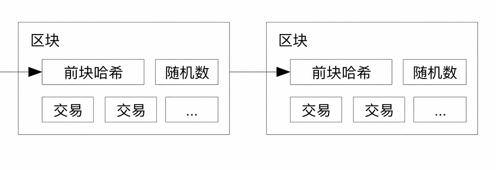
The proof-of-work also solves the problem of determining representation in majority decision making. If the majority were based on one-IP-address-one-vote, it could be subverted by anyone able to allocate many IPs. Proof-of-work is essentially one-CPU-one-vote. The majority decision is represented by the longest chain, which has the greatest proof-of-work effort invested in it. If a majority of CPU power is controlled by honest nodes, the honest chain will grow the fastest and outpace any competing chains. To modify a past block, an attacker would have to redo the proof-of-work of the block and all blocks after it and then catch up with and surpass the work of the honest nodes. We will show later that the probability of a slower attacker catching up diminishes exponentially as subsequent blocks are added.
工作量证明还解决了多数决策中代表权如何确定的问题。如果“多数”按照一个 IP 地址一票来认定，那么任何能够调配大量 IP 的人都可以颠覆它。工作量证明在本质上是一个 CPU 一票。多数决策由最长的链来代表，因为它凝聚了最大的工作量证明投入。如果多数 CPU 算力由诚实节点控制，诚实链就会增长得最快，把所有竞争链甩在身后。攻击者若想篡改某个过去的区块，就必须重做该区块及其后所有区块的工作量证明，然后还要追上并超越诚实节点的工作。后文将证明：随着后续区块不断增加，较慢的攻击者追平的概率会呈指数递减。
To compensate for increasing hardware speed and varying interest in running nodes over time, the proof-of-work difficulty is determined by a moving average targeting an average number of blocks per hour. If they're generated too fast, the difficulty increases.
为了应对硬件速度不断提升、以及各时期节点参与意愿的波动，工作量证明的难度由一个移动平均值来确定，目标是使每小时生成的区块数维持在一个平均水平。如果区块生成得太快，难度就会随之提高。
Network
网络
The steps to run the network are as follows:
- New transactions are broadcast to all nodes.
- Each node collects new transactions into a block.
- Each node works on finding a difficult proof-of-work for its block.
- When a node finds a proof-of-work, it broadcasts the block to all nodes.
- Nodes accept the block only if all transactions in it are valid and not already spent.
- Nodes express their acceptance of the block by working on creating the next block in the chain, using the hash of the accepted block as the previous hash.
运行网络的步骤如下：
- 新交易向所有节点广播；
- 每个节点把新交易收集进一个区块；
- 每个节点为它的区块寻找高难度的工作量证明；
- 当某个节点找到工作量证明，它就向所有节点广播这个区块；
- 只有当区块内所有交易都有效、且此前未被花费时，节点才接受该区块；
- 节点通过着手创建链上的下一个区块来表达对该区块的接受，并把被接受区块的哈希用作新区块的前块哈希。
Nodes always consider the longest chain to be the correct one and will keep working on extending it. If two nodes broadcast different versions of the next block simultaneously, some nodes may receive one or the other first. In that case, they work on the first one they received, but save the other branch in case it becomes longer. The tie will be broken when the next proof-of-work is found and one branch becomes longer; the nodes that were working on the other branch will then switch to the longer one.
节点永远把最长的链视为正确的链，并持续投入工作来延长它。如果两个节点同时广播了下一个区块的两个不同版本，那么一部分节点会先收到其中一个，另一部分节点先收到另一个。这种情况下，节点在自己先收到的那个区块上工作，但同时保留另一个分支，以防它后来居上变成更长的链。当下一个工作量证明被找到、其中一条分支变得更长时，僵局就被打破；此前在另一条分支上工作的节点会随即切换到更长的链上来。
New transaction broadcasts do not necessarily need to reach all nodes. As long as they reach many nodes, they will get into a block before long. Block broadcasts are also tolerant of dropped messages. If a node does not receive a block, it will request it when it receives the next block and realizes it missed one.
新交易的广播不必到达所有节点。只要触达足够多的节点，交易不久之后就会被打包进某个区块。区块广播同样能容忍消息丢失。如果一个节点没有收到某个区块，它会在收到下一个区块、意识到自己漏掉了一个时，主动请求补发。
Incentive
激励
By convention, the first transaction in a block is a special transaction that starts a new coin owned by the creator of the block. This adds an incentive for nodes to support the network, and provides a way to initially distribute coins into circulation, since there is no central authority to issue them. The steady addition of a constant of amount of new coins is analogous to gold miners expending resources to add gold to circulation. In our case, it is CPU time and electricity that is expended.
按照约定，每个区块的第一笔交易是一笔特殊交易，它铸造一枚新的货币，归区块创建者所有。这为节点支持网络提供了激励，同时，在没有中央机构发行货币的情况下，也提供了一种把货币初始分发到流通中的途径。以稳定的速度持续增发一定数量的新货币，就好比金矿矿工耗费资源把黄金注入流通。在我们的场景中，耗费的是 CPU 时间和电力。
The incentive can also be funded with transaction fees. If the output value of a transaction is less than its input value, the difference is a transaction fee that is added to the incentive value of the block containing the transaction. Once a predetermined number of coins have entered circulation, the incentive can transition entirely to transaction fees and be completely inflation free.
激励也可以由交易费来供给。如果一笔交易的输出值小于输入值，其差额就是交易费，计入包含这笔交易的区块的激励之中。一旦既定数量的货币全部进入流通，激励就可以完全过渡到交易费，从而彻底免于通货膨胀。
The incentive may help encourage nodes to stay honest. If a greedy attacker is able to assemble more CPU power than all the honest nodes, he would have to choose between using it to defraud people by stealing back his payments, or using it to generate new coins. He ought to find it more profitable to play by the rules, such rules that favour him with more new coins than everyone else combined, than to undermine the system and the validity of his own wealth.
这种激励或许还有助于促使节点保持诚实。假如一个贪婪的攻击者有能力聚集起比所有诚实节点总和还多的 CPU 算力，他就得做一个选择：是用这些算力窃回自己已付出的款项来欺诈他人，还是用它们铸造新的货币。他理应发现，遵守规则比破坏系统、进而破坏自己财富的有效性更加有利可图——毕竟这些规则让他获得的新货币，比其他所有人加起来还要多。
Reclaiming Disk Space
回收磁盘空间
Once the latest transaction in a coin is buried under enough blocks, the spent transactions before it can be discarded to save disk space. To facilitate this without breaking the block's hash, transactions are hashed in a Merkle Tree[7][2][5], with only the root included in the block's hash. Old blocks can then be compacted by stubbing off branches of the tree. The interior hashes do not need to be stored.
一旦某枚货币的最新交易已被埋在足够多的区块之下，它之前那些已花费的交易就可以被丢弃，以节省磁盘空间。为了在不破坏区块哈希的前提下做到这一点，交易以 Merkle 树[7][2][5] 的形式进行哈希，只有树根被包含在区块的哈希之中。旧区块随后可以通过剪除树枝的方式来压缩，树内部的哈希无需保存。
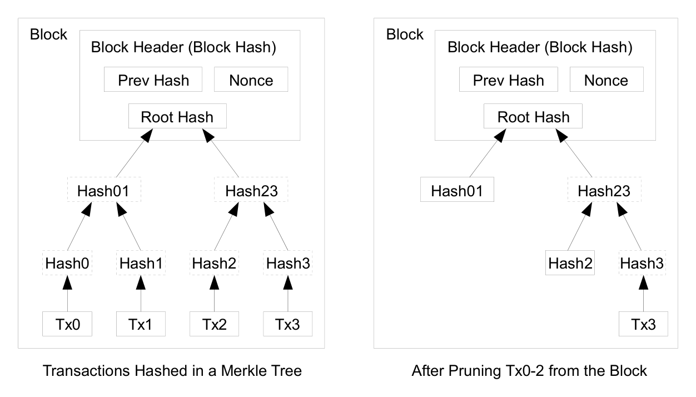
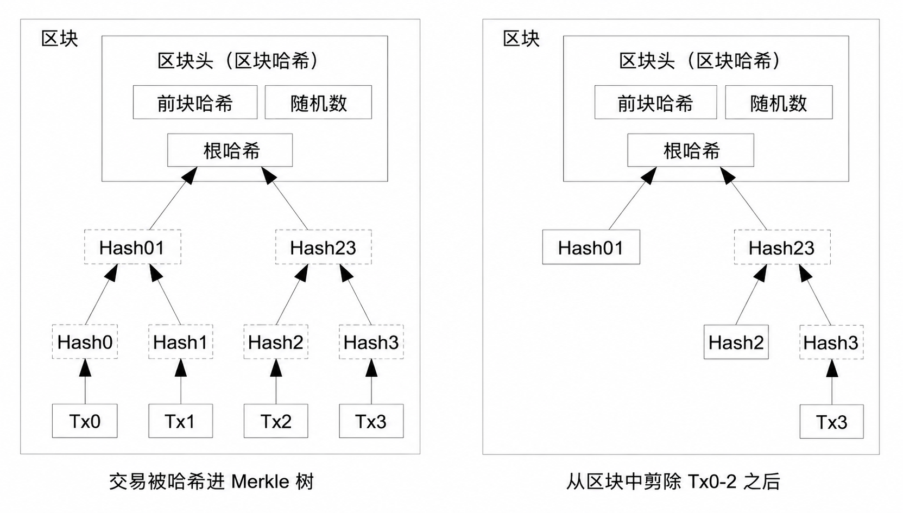
A block header with no transactions would be about 80 bytes. If we suppose blocks are generated every 10 minutes, 80 bytes * 6 * 24 * 365 = 4.2MB per year. With computer systems typically selling with 2GB of RAM as of 2008, and Moore's Law predicting current growth of 1.2GB per year, storage should not be a problem even if the block headers must be kept in memory.
不含交易的区块头大约是 80 字节。假设每 10 分钟生成一个区块，那么每年为 80 字节 × 6 × 24 × 365 = 4.2MB。2008 年在售的计算机系统通常配备 2GB 内存，而按摩尔定律预测的当前增长速度为每年 1.2GB，即使区块头必须全部保存在内存中，存储也不成问题。
Simplified Payment Verification
简化支付验证
It is possible to verify payments without running a full network node. A user only needs to keep a copy of the block headers of the longest proof-of-work chain, which he can get by querying network nodes until he's convinced he has the longest chain, and obtain the Merkle branch linking the transaction to the block it's timestamped in. He can't check the transaction for himself, but by linking it to a place in the chain, he can see that a network node has accepted it, and blocks added after it further confirm the network has accepted it.
不运行完整的网络节点，也可以验证支付。用户只需保留一份最长工作量证明链的区块头副本——他可以不断向网络节点查询，直到确信自己拿到的是最长链——然后获取把这笔交易链接到其所在时间戳区块的 Merkle 分支。他无法亲自核验这笔交易，但通过把它链接到链上的某个位置，他可以看到已经有网络节点接受了它，而其后不断追加的区块进一步确认了网络对它的接受。
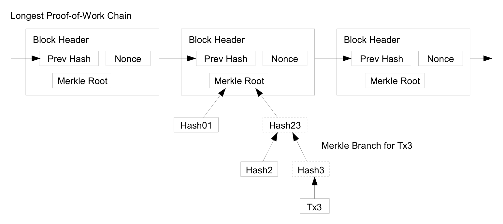
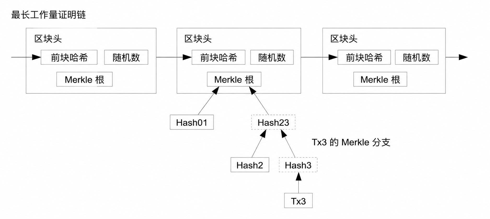
As such, the verification is reliable as long as honest nodes control the network, but is more vulnerable if the network is overpowered by an attacker. While network nodes can verify transactions for themselves, the simplified method can be fooled by an attacker's fabricated transactions for as long as the attacker can continue to overpower the network. One strategy to protect against this would be to accept alerts from network nodes when they detect an invalid block, prompting the user's software to download the full block and alerted transactions to confirm the inconsistency. Businesses that receive frequent payments will probably still want to run their own nodes for more independent security and quicker verification.
如此一来，只要诚实节点控制着网络，这种验证方式就是可靠的；可一旦网络被攻击者的算力压制，它就会变得比较脆弱。网络节点可以亲自验证交易，而这种简化方法在攻击者能够持续压制网络的时间里，可能被攻击者伪造的交易所欺骗。一种防范策略是：当网络节点检测到无效区块时，接受它们发出的告警，提示用户软件下载完整区块和被告警的交易，以确认其中的不一致。收款频繁的商家可能仍会愿意运行自己的完整节点，以获得更独立的安全性和更快的验证。
Combining and Splitting Value
价值的合并与分割
Although it would be possible to handle coins individually, it would be unwieldy to make a separate transaction for every cent in a transfer. To allow value to be split and combined, transactions contain multiple inputs and outputs. Normally there will be either a single input from a larger previous transaction or multiple inputs combining smaller amounts, and at most two outputs: one for the payment, and one returning the change, if any, back to the sender.
尽管逐枚处理货币是可行的，但为转账中的每一分钱都单独发起一笔交易，未免太过笨拙。为了允许价值被分割与合并，交易包含多个输入和输出。通常的情形是：要么是来自此前某笔较大交易的单一输入，要么是合并了若干小额的多个输入；而输出至多两个——一个用于支付，另一个在有找零时把零头退还给付款人。
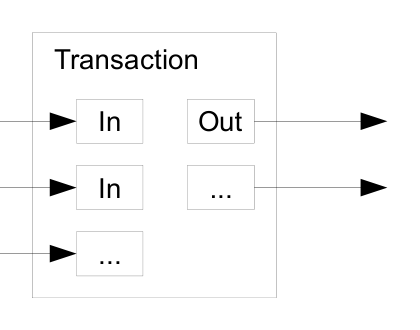
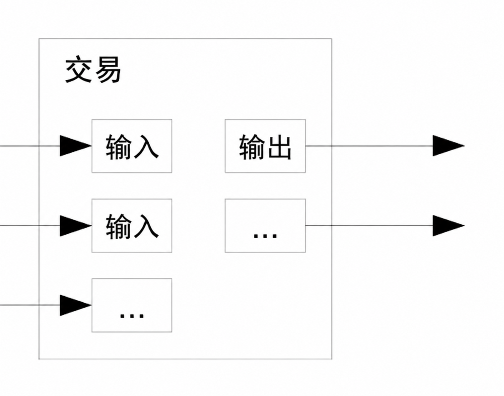
It should be noted that fan-out, where a transaction depends on several transactions, and those transactions depend on many more, is not a problem here. There is never the need to extract a complete standalone copy of a transaction's history.
值得指出的是，“扇出”在这里并不构成问题——所谓扇出，是指一笔交易依赖于数笔交易，而那几笔交易又依赖于更多的交易。这里永远不需要提取出某笔交易历史的完整独立副本。
Privacy
隐私
The traditional banking model achieves a level of privacy by limiting access to information to the parties involved and the trusted third party. The necessity to announce all transactions publicly precludes this method, but privacy can still be maintained by breaking the flow of information in another place: by keeping public keys anonymous. The public can see that someone is sending an amount to someone else, but without information linking the transaction to anyone. This is similar to the level of information released by stock exchanges, where the time and size of individual trades, the "tape", is made public, but without telling who the parties were.
传统银行模式通过把信息的获取限定在相关方和可信第三方的范围内，实现了一定程度的隐私。必须公开宣布全部交易的要求排除了这种方法，但隐私仍然可以通过在另一处切断信息流来维护：让公钥保持匿名。公众可以看到有人正在向另一个人发送一笔金额，但没有任何信息能把这笔交易与具体的人关联起来。这与证券交易所公布信息的级别类似：每笔成交的时间和数量——即“行情纸带”——是公开的，但不会披露交易双方是谁。
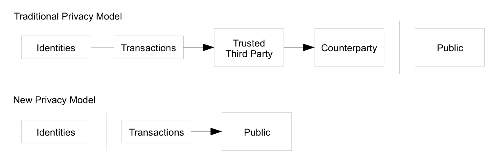
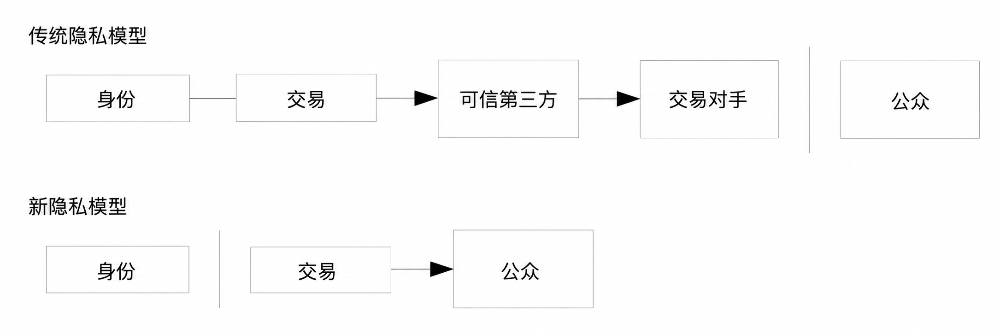
As an additional firewall, a new key pair should be used for each transaction to keep them from being linked to a common owner. Some linking is still unavoidable with multi-input transactions, which necessarily reveal that their inputs were owned by the same owner. The risk is that if the owner of a key is revealed, linking could reveal other transactions that belonged to the same owner.
作为一道额外的防火墙，每笔交易都应当使用一对新的密钥，以避免它们被关联到同一位所有者。对于多输入交易，某些关联仍然无法避免，因为这类交易必然暴露其各个输入同属一位所有者。风险在于：一旦某个密钥的所有者身份被揭露，顺着关联就可能揭露出属于同一所有者的其他交易。
Calculations
计算
We consider the scenario of an attacker trying to generate an alternate chain faster than the honest chain. Even if this is accomplished, it does not throw the system open to arbitrary changes, such as creating value out of thin air or taking money that never belonged to the attacker. Nodes are not going to accept an invalid transaction as payment, and honest nodes will never accept a block containing them. An attacker can only try to change one of his own transactions to take back money he recently spent.
我们来考虑攻击者试图以快于诚实链的速度生成一条替代链的场景。即便他得逞，也不会让这个系统门户洞开、任人随意更改——他既不能凭空创造价值，也不能拿走从未属于他的钱。节点不会把无效交易当作支付来接受，诚实节点也永远不会接受包含无效交易的区块。攻击者唯一能做的，是更改他自己的某笔交易，试图收回他不久前刚花出去的钱。
The race between the honest chain and an attacker chain can be characterized as a Binomial Random Walk. The success event is the honest chain being extended by one block, increasing its lead by +1, and the failure event is the attacker's chain being extended by one block, reducing the gap by -1.
诚实链与攻击者链之间的竞赛，可以用二项随机游走来刻画。成功事件是诚实链延长一个区块，领先优势 +1；失败事件是攻击者的链延长一个区块，差距缩小 1。
The probability of an attacker catching up from a given deficit is analogous to a Gambler's Ruin problem. Suppose a gambler with unlimited credit starts at a deficit and plays potentially an infinite number of trials to try to reach breakeven. We can calculate the probability he ever reaches breakeven, or that an attacker ever catches up with the honest chain, as follows[8]:
攻击者从给定的落后差距中追平的概率，可以类比“赌徒破产”问题。设想一个手握无限信用的赌徒从亏空出发，进行可能无限多次的试赌，试图达到盈亏平衡。我们可以按如下方式计算他最终回本的概率——也就是攻击者最终追上诚实链的概率[8]：
p = probability an honest node finds the next block
q = probability the attacker finds the next block
qz = probability the attacker will ever catch up from z blocks behind
p = 诚实节点找到下一个区块的概率
q = 攻击者找到下一个区块的概率
qz = 攻击者从落后 z 个区块的状态下最终追平的概率
Given our assumption that p > q, the probability drops exponentially as the number of blocks the attacker has to catch up with increases. With the odds against him, if he doesn't make a lucky lunge forward early on, his chances become vanishingly small as he falls further behind.
基于我们所做的 p > q 这一假设，随着攻击者需要追赶的区块数增加，追平概率呈指数下降。在胜算不利的情况下，如果他没能在早期幸运地向前猛冲一把，那么随着落后越来越远，翻盘的机会将变得微乎其微。
We now consider how long the recipient of a new transaction needs to wait before being sufficiently certain the sender can't change the transaction. We assume the sender is an attacker who wants to make the recipient believe he paid him for a while, then switch it to pay back to himself after some time has passed. The receiver will be alerted when that happens, but the sender hopes it will be too late.
现在来考虑：一笔新交易的收款人需要等待多久，才能足够确信付款人已无法更改这笔交易。我们假设付款人是一名攻击者，他想让收款人一时相信自己已经付了款，然后过一段时间再把这笔钱改回付给自己。事情发生时收款人会收到告警，但付款人希望到那时已为时过晚。
The receiver generates a new key pair and gives the public key to the sender shortly before signing. This prevents the sender from preparing a chain of blocks ahead of time by working on it continuously until he is lucky enough to get far enough ahead, then executing the transaction at that moment. Once the transaction is sent, the dishonest sender starts working in secret on a parallel chain containing an alternate version of his transaction.
收款人生成一对新的密钥，并在临近签名之前才把公钥交给付款人。这可以防止如下情形：付款人提前持续不停地运算，预先准备好一条区块链，等到运气好、领先足够多的那一刻才执行交易。交易一经发出，不诚实的付款人便开始秘密地在一条平行链上工作，链中包含着他那笔交易的替代版本。
The recipient waits until the transaction has been added to a block and z blocks have been linked after it. He doesn't know the exact amount of progress the attacker has made, but assuming the honest blocks took the average expected time per block, the attacker's potential progress will be a Poisson distribution with expected value:
收款人等待，直到这笔交易被加进某个区块，且其后已经链接了 z 个区块。他并不知道攻击者的确切进度，但假定诚实区块按每块的平均预期时间生成，那么攻击者的潜在进度将服从泊松分布，其期望值为：
To get the probability the attacker could still catch up now, we multiply the Poisson density for each amount of progress he could have made by the probability he could catch up from that point:
为了得到攻击者此刻仍能追上的概率，我们把他每一种可能已经取得的进度的泊松密度，乘以他从该进度出发能够追平的概率：
Rearranging to avoid summing the infinite tail of the distribution...
整理化简，以避免对分布的无穷尾部求和……
Converting to C code...
转换为 C 语言代码……
#include <math.h> double AttackerSuccessProbability(double q, int z) { double p = 1.0 - q; double lambda = z * (q / p); double sum = 1.0; int i, k; for (k = 0; k <= z; k++) { double poisson = exp(-lambda); for (i = 1; i <= k; i++) poisson *= lambda / i; sum -= poisson * (1 - pow(q / p, z - k)); } return sum; }
Running some results, we can see the probability drop off exponentially with z.
运行若干组结果，可以看到概率随 z 呈指数下降。
q=0.1 z=0 P=1.0000000 z=1 P=0.2045873 z=2 P=0.0509779 z=3 P=0.0131722 z=4 P=0.0034552 z=5 P=0.0009137 z=6 P=0.0002428 z=7 P=0.0000647 z=8 P=0.0000173 z=9 P=0.0000046 z=10 P=0.0000012
q=0.3 z=0 P=1.0000000 z=5 P=0.1773523 z=10 P=0.0416605 z=15 P=0.0101008 z=20 P=0.0024804 z=25 P=0.0006132 z=30 P=0.0001522 z=35 P=0.0000379 z=40 P=0.0000095 z=45 P=0.0000024 z=50 P=0.0000006
Solving for P less than 0.1%...
求解使 P 小于 0.1% 的 z 值……
P < 0.001 q=0.10 z=5 q=0.15 z=8 q=0.20 z=11 q=0.25 z=15 q=0.30 z=24 q=0.35 z=41 q=0.40 z=89 q=0.45 z=340
Conclusion
结论
We have proposed a system for electronic transactions without relying on trust. We started with the usual framework of coins made from digital signatures, which provides strong control of ownership, but is incomplete without a way to prevent double-spending. To solve this, we proposed a peer-to-peer network using proof-of-work to record a public history of transactions that quickly becomes computationally impractical for an attacker to change if honest nodes control a majority of CPU power. The network is robust in its unstructured simplicity. Nodes work all at once with little coordination. They do not need to be identified, since messages are not routed to any particular place and only need to be delivered on a best effort basis. Nodes can leave and rejoin the network at will, accepting the proof-of-work chain as proof of what happened while they were gone. They vote with their CPU power, expressing their acceptance of valid blocks by working on extending them and rejecting invalid blocks by refusing to work on them. Any needed rules and incentives can be enforced with this consensus mechanism.
我们提出了一种不依赖信任的电子交易系统。我们从常见的数字签名货币框架出发——它提供了对所有权的有力控制，但因缺乏防止双重支付的手段而不完整。为了解决这个问题，我们提出了一个使用工作量证明来记录交易公开历史的点对点网络：只要诚实节点控制着多数 CPU 算力，攻击者要篡改这份历史，在计算上很快就会变得不可行。这个网络的健壮性，正在于它不加雕饰的简洁。节点们同时各自工作，几乎不需要协调。它们不需要被识别身份，因为消息并不路由到任何特定地点，只需按尽力而为的原则投递。节点可以随时离开和重新加入网络，把工作量证明链当作它们离开期间所发生事件的证明。它们用自己的 CPU 算力投票：通过投入算力延长有效区块来表达接受，通过拒绝在无效区块上工作来表达抵制。一切必要的规则和激励，都可以通过这一共识机制来施行。
References
参考文献
- W. Dai, "b-money," http://www.weidai.com/bmoney.txt, 1998.
- H. Massias, X.S. Avila, and J.-J. Quisquater, "Design of a secure timestamping service with minimal trust requirements," In 20th Symposium on Information Theory in the Benelux, May 1999.
- S. Haber, W.S. Stornetta, "How to time-stamp a digital document," In Journal of Cryptology, vol 3, no 2, pages 99-111, 1991.
- D. Bayer, S. Haber, W.S. Stornetta, "Improving the efficiency and reliability of digital time-stamping," In Sequences II: Methods in Communication, Security and Computer Science, pages 329-334, 1993.
- S. Haber, W.S. Stornetta, "Secure names for bit-strings," In Proceedings of the 4th ACM Conference on Computer and Communications Security, pages 28-35, April 1997.
- A. Back, "Hashcash - a denial of service counter-measure," http://www.hashcash.org/papers/hashcash.pdf, 2002.
- R.C. Merkle, "Protocols for public key cryptosystems," In Proc. 1980 Symposium on Security and Privacy, IEEE Computer Society, pages 122-133, April 1980.
- W. Feller, "An introduction to probability theory and its applications," 1957.